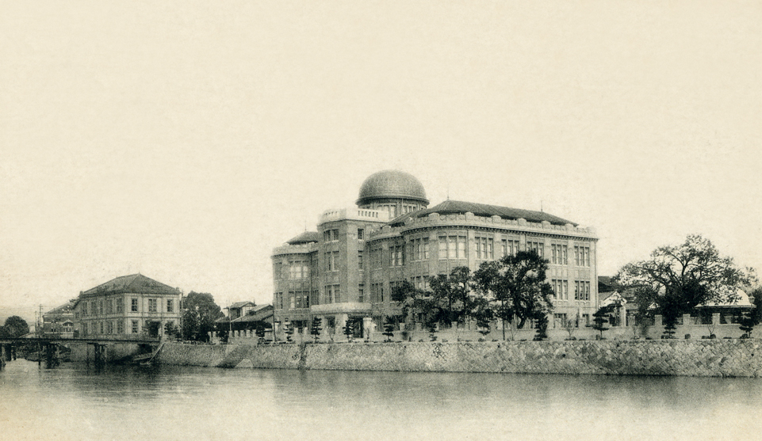
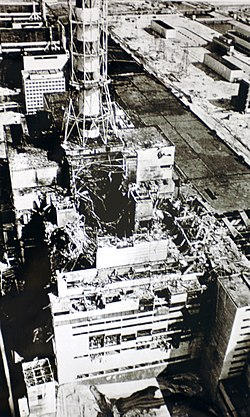
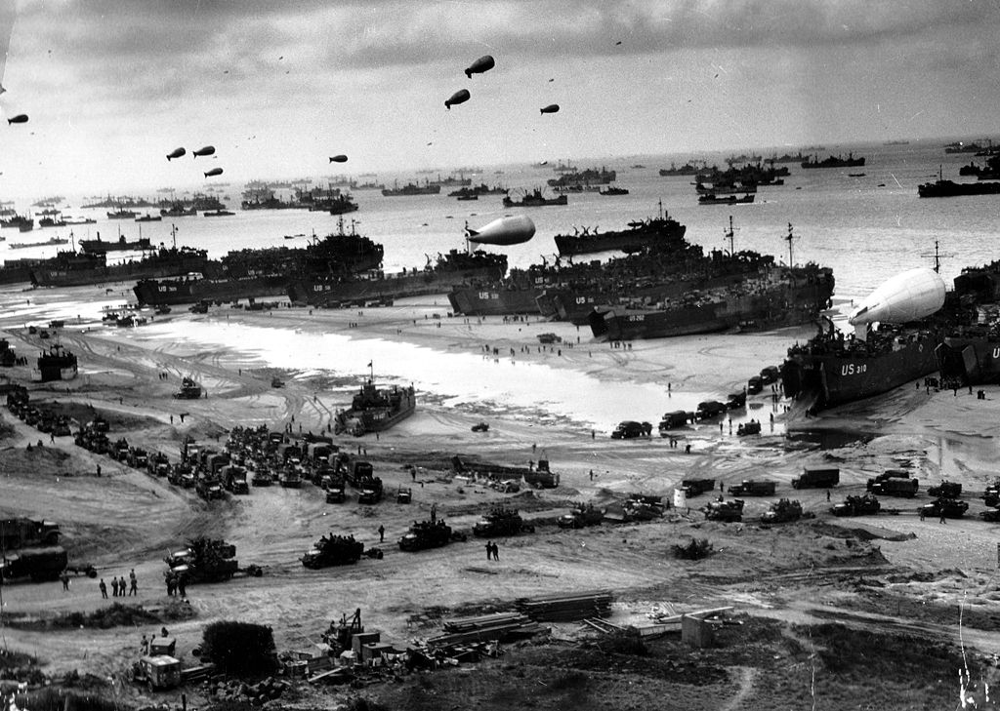

Hiroshima
Hiroshima fue fundada en 1589 sobre la costa del mar Interior de Seto por el señor feudal Mōri
Terumoto,
convirtiéndola en capital después de marcharse del castillo de Koriyama en la provincia de Aki.
construyendo rápidamente el Castillo Hiroshima trasladándose Terumoto al mismo en 1593. Terumoto
estaba
en el bando perdedor en la batalla de Sekigahara. El ganador, Tokugawa Ieyasu, privó a Mori Terumoto
de
la mayoría de sus feudos, incluido Hiroshima, cediendo la provincia de Aki a Fukushima Masanori un
daimio que había apoyado a Tokugawa. El castillo pasó a Asano Nagaakira en 1619 siendo nombrado
daimio
de esta zona. Bajo su administración la ciudad prosperó, se desarrolló y amplió con pocos conflictos
y
disturbios. Sus descendientes continuaron gobernando la ciudad hasta la restauración Meiji en el
siglo
xix.

Chernobil
El accidente de Chernóbil fue un accidente nuclear ocurrido el sábado 26 de abril de 1986 en la
central
nuclear Vladímir Ilich Lenin ubicada en el norte de Ucrania, que en ese momento pertenecía a la
Unión
Soviética, a 2,7 km de la ciudad de Prípiat, a 18 km de la ciudad de Chernóbil y a 17 km de la
frontera
con Bielorrusia. Es considerado el peor accidente nuclear de la historia, y junto con el accidente
nuclear de Fukushima I en Japón en 2011, como el más grave en la Escala Internacional de Accidentes
Nucleares (accidente mayor, nivel 7). Asimismo, suele ser incluido entre los grandes desastres
medioambientales de la historia.

Playa de Omaha
Playa de Omaha fue el nombre en clave de unos de los principales puntos de desembarco de la invasión
aliada de la Francia ocupada por los alemanes en los desembarcos de Normandía del 6 de junio de
1944,
durante la Segunda Guerra Mundial. La playa estaba situada en la costa norte de Francia, frente al
Canal de la Mancha, y tenía 8 km de longitud, extendiéndose desde el este de
Sainte-Honorine-des-Pertes
hasta el oeste de Vierville-sur-Mer. El desembarco en este sitio fue clave ya que permitía enlazar
los
desembarcos británicos del este con el desembarco estadounidense del oeste, asegurando así la costa
de
Normandía. El Ejército de los Estados Unidos se encargó del desembarco en esta playa contando con
transporte marítimo proporcionado por la Armada de los Estados Unidos y elementos de la Marina Real
Británica.